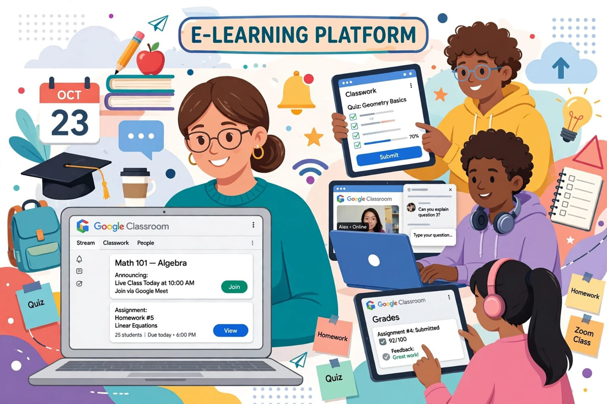

اسم الطالب: عمر محمد عبدالمنعم النحاس
الرقم الجامعي: 252430
تحت إشراف: د / مها زغلول
المقرر: تطبيقات الإنترنت والمنصات الإلكترونية - Task 2
أصبحت التكنولوجيا جزءًا أساسيًا من العملية التعليمية في العصر الحديث، حيث ساهمت في تطوير أساليب التدريس والتعلم، وجعلت الحصول على المعلومات أكثر سهولة وسرعة.
ومن أهم مظاهر هذا التطور ظهور منصات التعلم الإلكتروني، مثل Google Classroom، التي تساعد على تنظيم العملية التعليمية وتسهيل التواصل بين الطلاب والمعلمين.

صورة توضيحية: استخدام منصات التعلم الإلكتروني في تنظيم الدراسة والواجبات والتواصل.
منصات التعلم الإلكتروني هي مواقع وتطبيقات إلكترونية تُستخدم لتقديم الدروس والمواد التعليمية عبر الإنترنت، وتساعد المدرسين على شرح المناهج وتوزيع الواجبات والاختبارات، كما تتيح للطلاب متابعة دروسهم وتسليم واجباتهم والتواصل مع معلميهم بسهولة.
ومن أشهر هذه المنصات Google Classroom و Microsoft Teams و Moodle.
1. سهولة الوصول إلى الدروس: يستطيع الطالب الاطلاع على المواد في أي وقت ومن أي مكان.
2. تنظيم الواجبات: معرفة الواجبات المطلوبة ومواعيد تسليمها.
3. سهولة التواصل مع المدرسين: طرح الأسئلة من خلال التعليقات والرسائل.
4. متابعة الدرجات: معرفة الدرجات وملاحظات المعلم.
5. التعلم حسب سرعة الطالب: مراجعة المواد أكثر من مرة.
6. تنمية المهارات الرقمية: مهارات الحاسوب والإنترنت والملفات والتطبيقات التعليمية.
تساعد المنصات المدرسين على إعداد الفصول الافتراضية، ونشر المواد التعليمية، وتوزيع الواجبات والاختبارات، وتوفير الوقت والجهد، ومتابعة مستوى الطلاب، وتحسين التواصل معهم.
ينشئ المدرس فصلًا إلكترونيًا ويدعو الطلاب، ثم ينشر الدروس، ويضيف الواجبات ويحدد موعد التسليم. يفتح الطالب المنصة وينجز الواجب ويرسله إلكترونيًا، ثم يراجع المدرس الإجابات ويضع الدرجات، ويتابع الطالب التقييمات لمعرفة مستواه.
تتميز المنصات بسهولة الاستخدام وسرعة تبادل المعلومات وإمكانية الوصول للمحتوى في أوقات مختلفة. ومن التحديات: الحاجة لاتصال جيد بالإنترنت وتوافر الأجهزة، واحتمال تشتت الانتباه، والحاجة للالتزام وتنظيم الوقت.
| المنصة | أهم الاستخدامات | أهم المميزات |
|---|---|---|
| Google Classroom | إدارة الفصول والواجبات | سهلة ومجانية ومرتبطة بأدوات Google |
| Microsoft Teams | الاجتماعات والفصول الافتراضية | اجتماعات فيديو وتكامل مع Office |
| Moodle | إدارة التعلم الكاملة | مرنة ومفتوحة المصدر وتقارير متقدمة |
في النهاية، تمثل منصات التعلم الإلكتروني خطوة مهمة في تطوير التعليم، لأنها تساعد الطالب على الوصول إلى المعلومات وتنظيم واجباته ومتابعة مستواه، كما تساعد المدرسين على إعداد الدروس وتقييم الطلاب بصورة أسهل. وتُعد منصة Google Classroom مثالًا واضحًا على توظيف التكنولوجيا في خدمة التعليم.